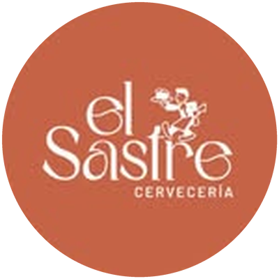

El Sastre LlamarEl Sastre, cervecería en Socuéllamos
La caña, de bodega.
Mahou de bodega bien tirada y vinos de la zona, en la barra o en la terraza de la plaza.
- 40+
- años de la familia El Sastre en el pueblo
- 4,5
- en Google, con 111 reseñas
La cocina sale a la plaza.
Tapas y raciones para compartir, menú del día a diario y arroces por encargo.
Ver la carta
Pulsa un plato con foto para verla. Precios: pregunta en barra o llama.
Cervecería y gastrobar bajo los arcos de la Plaza de la Constitución, en Socuéllamos. Desayunos, menú del día, meriendas, tapas y raciones.
Horario
Consultando…
Calculado con la hora de Socuéllamos según su horario habitual (Instagram). Festivos: llama para confirmar.
- LunesCerrado
- Martes7:00 – cierre
- Miércoles7:00 – cierre
- Jueves7:00 – cierre
- Viernes7:00 – cierre
- Sábado11:00 – cierre
- Domingo y festivos11:00 – cierre
13630 Socuéllamos, Ciudad Real 926 53 04 50 605 90 81 92
«Para mí es una parada obligatoria en mi visita a Socuéllamos.»
«El auténtico concepto de gastrobar: comida de gran calidad con un rápido servicio.»
«Comida de lujo y servicio genial, nos han aconsejado súper bien.»